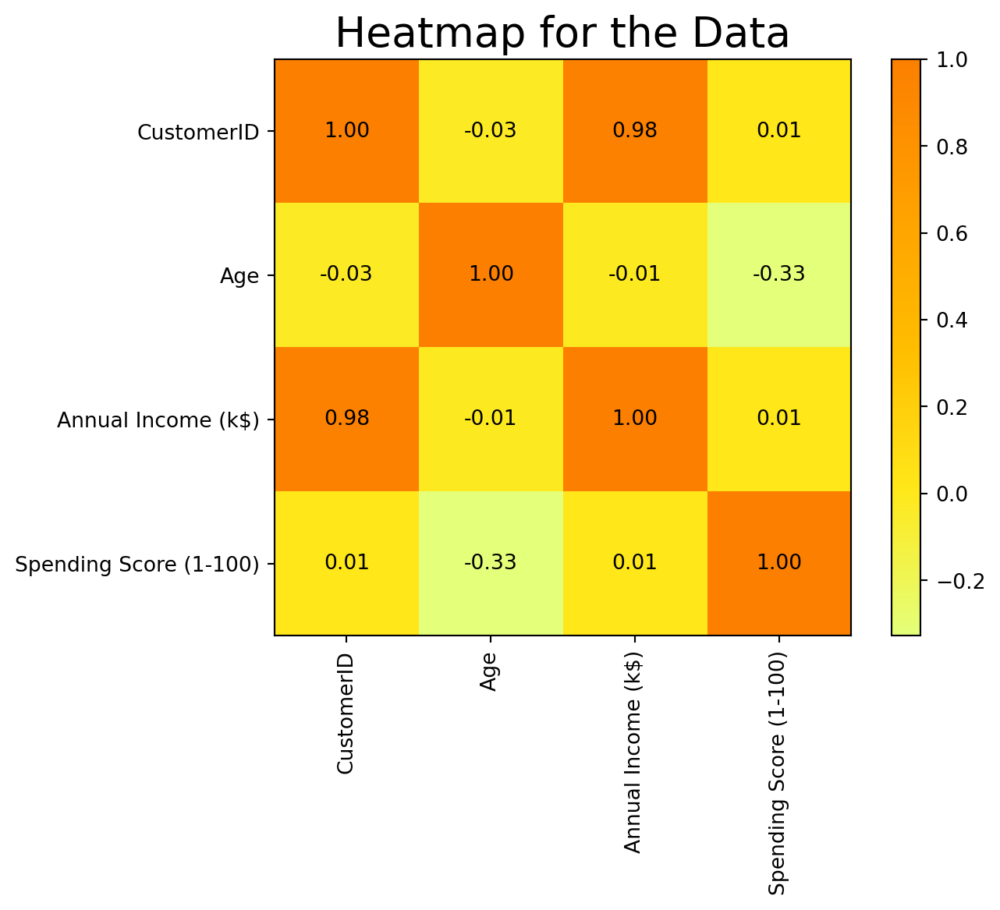
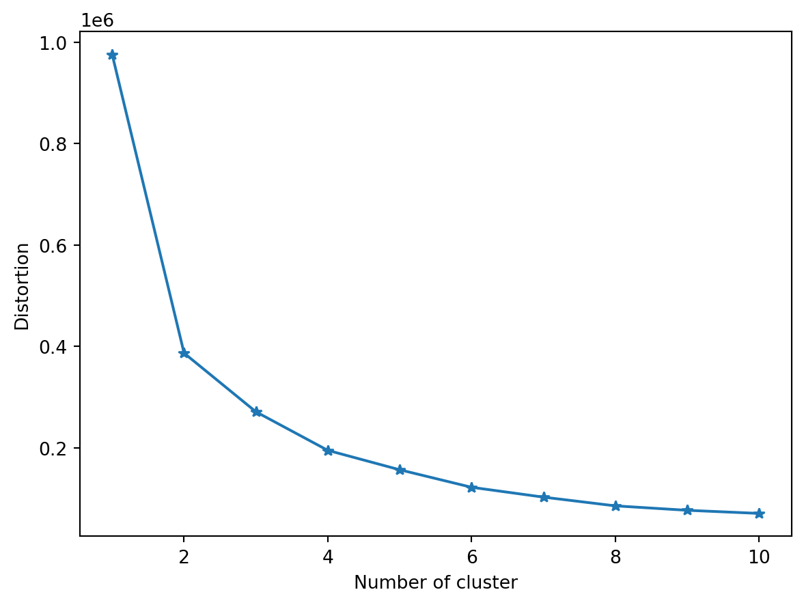
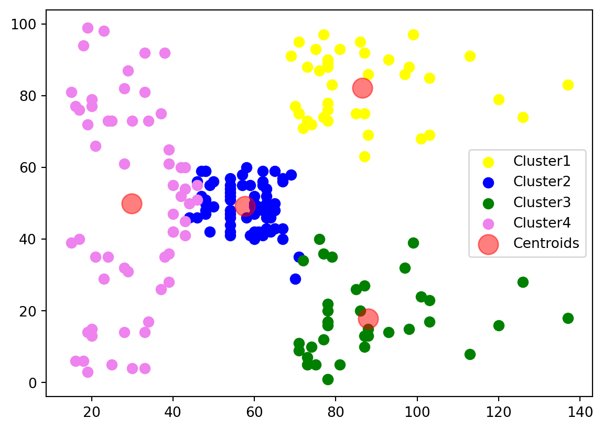
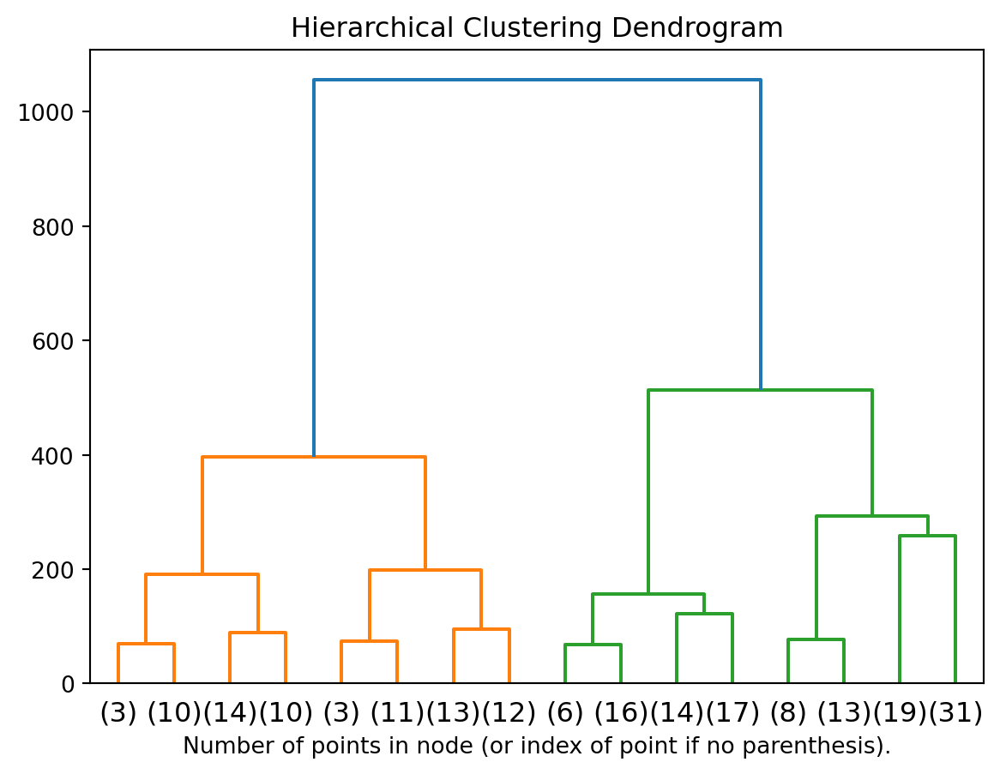

Clustering is a fundamental technique in unsupervised learning, used to group similar data points together. In this blog, we will explore three popular clustering algorithms: KMeans, DBSCAN, and Agglomerative Clustering. We’ll provide a brief overview of each algorithm, discuss their applications, and provide Python code examples with visualizations to demonstrate how they work.
Introduction to Clustering Algorithms
KMeans Clustering
KMeans is an iterative algorithm that partitions data into K clusters. It works by assigning data points to the nearest cluster center and updating the center as the mean of the assigned points. This process continues until convergence.
DBSCAN Clustering
DBSCAN (Density-Based Spatial Clustering of Applications with Noise) is a density-based clustering algorithm. It groups together points that are closely packed and marks points that lie alone in low-density regions as outliers.
Agglomerative Clustering
Agglomerative Clustering is a hierarchical clustering technique that starts with each point as a separate cluster and merges the closest clusters iteratively until only one cluster remains.
Python Code Examples
KMeans Clustering
Figure 1 visualises the clusters created after kmeans clustering. Figure 1 (a) displays the correlation heat map to identify the most correlated features. It is observed that Annual Income (k$) and Spending Socre (1-100) are the most correlated features. Figure 1 (b) shows the elbow curve indicating that 4 clusters would be better to use and Figure 1 (c) shows the clusters after clustering.
Code
import numpy as npimport matplotlib.pyplot as pltfrom sklearn import metricsimport seaborn as snsfrom sklearn.cluster import KMeansimport warningsimport pandas as pdwarnings.filterwarnings("ignore")df = pd.read_csv('Mall_Customers.csv')X = df[['CustomerID','Age', 'Annual Income (k$)', 'Spending Score (1-100)']]corr_matrix = np.corrcoef(X.values, rowvar=False)plt.imshow(corr_matrix, cmap='Wistia', interpolation='nearest')for i inrange(corr_matrix.shape[0]):for j inrange(corr_matrix.shape[1]): plt.text(j, i, f'{corr_matrix[i, j]:.2f}', ha='center', va='center', color='black')plt.title('Heatmap for the Data', fontsize=20)plt.xticks(np.arange(corr_matrix.shape[0]), labels=['CustomerID','Age', 'Annual Income (k$)', 'Spending Score (1-100)'], rotation=90)plt.yticks(np.arange(corr_matrix.shape[1]), labels=['CustomerID','Age', 'Annual Income (k$)', 'Spending Score (1-100)'])plt.colorbar()plt.show()X = X.valuesdist = [] for i inrange(1,11): km = KMeans(n_clusters=i, random_state=42).fit(X) dist.append(km.inertia_)plt.plot(range(1,11), dist, marker='*')plt.xlabel('Number of cluster')plt.ylabel('Distortion')plt.show()# Applying KMeans algorithmkmeans = KMeans(n_clusters=4)kmeans.fit(X)y_kmeans = kmeans.predict(X)centers = kmeans.cluster_centers_# Visualizing clusters with different colors and a legendplt.scatter(X[y_kmeans ==0, 2], X[y_kmeans ==0, 3], c='yellow', s=50, cmap='viridis', label='Cluster1')plt.scatter(X[y_kmeans ==1, 2], X[y_kmeans ==1, 3], c='blue', s=50, cmap='viridis', label='Cluster2')plt.scatter(X[y_kmeans ==2, 2], X[y_kmeans ==2, 3], c='green', s=50, cmap='viridis', label='Cluster3')plt.scatter(X[y_kmeans ==3, 2], X[y_kmeans ==3, 3], c='violet', s=50, cmap='viridis', label='Cluster4')plt.scatter(centers[:, 2], centers[:, 3], c='red', s=200, alpha=0.5, label='Centroids')plt.legend()plt.show()print('Silhouette Score: ',metrics.silhouette_score(X, km.labels_, metric='euclidean'))

(a) Correlation Heat Map to identify correlated features

(b) Elbow Curve

(c) Cluster Visualization
Silhouette Score: 0.3724780422340438
Figure 1: KMeans Clustering
DBSCAN Clustering
Figure 2 visualises the clusters created after DBScan
Figure 3 visualises the dendogram created after aglomerative clustering on the mall customer dataset
Code
import numpy as npfrom matplotlib import pyplot as pltfrom scipy.cluster.hierarchy import dendrogramimport warningswarnings.filterwarnings("ignore")from sklearn.cluster import AgglomerativeClusteringimport pandas as pddef plot_dendrogram(model, **kwargs):# Create linkage matrix and then plot the dendrogram# create the counts of samples under each node counts = np.zeros(model.children_.shape[0]) n_samples =len(model.labels_)for i, merge inenumerate(model.children_): current_count =0for child_idx in merge:if child_idx < n_samples: current_count +=1# leaf nodeelse: current_count += counts[child_idx - n_samples] counts[i] = current_count linkage_matrix = np.column_stack( [model.children_, model.distances_, counts] ).astype(float)# Plot the corresponding dendrogram dendrogram(linkage_matrix, **kwargs)df = pd.read_csv('Mall_Customers.csv')X = df[['CustomerID','Age', 'Annual Income (k$)', 'Spending Score (1-100)']].values# setting distance_threshold=0 ensures we compute the full tree.model = AgglomerativeClustering(distance_threshold=0, n_clusters=None)model = model.fit(X)plt.title("Hierarchical Clustering Dendrogram")# plot the top three levels of the dendrogramplot_dendrogram(model, truncate_mode="level", p=3)plt.xlabel("Number of points in node (or index of point if no parenthesis).")plt.show()

Figure 3: Agglomerative Clustering Dendogram
Conclusion
Clustering is a powerful technique for exploring and understanding complex datasets. Each algorithm has its unique strengths and weaknesses, making them suitable for different types of data and applications. By understanding the nuances of each algorithm, you can apply them effectively to uncover hidden patterns and insights in your data.
In this blog, we explored KMeans, DBSCAN, and Agglomerative Clustering and provided Python code examples for each. We hope this overview helps you get started with clustering and inspires you to explore more complex applications and datasets.
Source Code
---title: "Understanding Clustering"image: image.pngauthor: "Swapnil Singh"date: "2023-11-05"categories: [clustering, unsupervised learning]format: html: code-fold: true code-tools: truejupyter: python3---Clustering is a fundamental technique in unsupervised learning, used to group similar data points together. In this blog, we will explore three popular clustering algorithms: KMeans, DBSCAN, and Agglomerative Clustering. We'll provide a brief overview of each algorithm, discuss their applications, and provide Python code examples with visualizations to demonstrate how they work.# Introduction to Clustering Algorithms## KMeans ClusteringKMeans is an iterative algorithm that partitions data into K clusters. It works by assigning data points to the nearest cluster center and updating the center as the mean of the assigned points. This process continues until convergence.## DBSCAN ClusteringDBSCAN (Density-Based Spatial Clustering of Applications with Noise) is a density-based clustering algorithm. It groups together points that are closely packed and marks points that lie alone in low-density regions as outliers.## Agglomerative ClusteringAgglomerative Clustering is a hierarchical clustering technique that starts with each point as a separate cluster and merges the closest clusters iteratively until only one cluster remains.# Python Code Examples## KMeans Clustering@fig-kmean visualises the clusters created after kmeans clustering. @fig-kmean-1 displays the correlation heat map to identify the most correlated features. It is observed that Annual Income (k$) and Spending Socre (1-100) are the most correlated features. @fig-kmean-2 shows the elbow curve indicating that 4 clusters would be better to use and @fig-kmean-3 shows the clusters after clustering.```{python}#| label: fig-kmean#| fig-cap: "KMeans Clustering"#| fig-subcap:#| - Correlation Heat Map to identify correlated features#| - Elbow Curve#| - Cluster Visualizationimport numpy as npimport matplotlib.pyplot as pltfrom sklearn import metricsimport seaborn as snsfrom sklearn.cluster import KMeansimport warningsimport pandas as pdwarnings.filterwarnings("ignore")df = pd.read_csv('Mall_Customers.csv')X = df[['CustomerID','Age', 'Annual Income (k$)', 'Spending Score (1-100)']]corr_matrix = np.corrcoef(X.values, rowvar=False)plt.imshow(corr_matrix, cmap='Wistia', interpolation='nearest')for i inrange(corr_matrix.shape[0]):for j inrange(corr_matrix.shape[1]): plt.text(j, i, f'{corr_matrix[i, j]:.2f}', ha='center', va='center', color='black')plt.title('Heatmap for the Data', fontsize=20)plt.xticks(np.arange(corr_matrix.shape[0]), labels=['CustomerID','Age', 'Annual Income (k$)', 'Spending Score (1-100)'], rotation=90)plt.yticks(np.arange(corr_matrix.shape[1]), labels=['CustomerID','Age', 'Annual Income (k$)', 'Spending Score (1-100)'])plt.colorbar()plt.show()X = X.valuesdist = [] for i inrange(1,11): km = KMeans(n_clusters=i, random_state=42).fit(X) dist.append(km.inertia_)plt.plot(range(1,11), dist, marker='*')plt.xlabel('Number of cluster')plt.ylabel('Distortion')plt.show()# Applying KMeans algorithmkmeans = KMeans(n_clusters=4)kmeans.fit(X)y_kmeans = kmeans.predict(X)centers = kmeans.cluster_centers_# Visualizing clusters with different colors and a legendplt.scatter(X[y_kmeans ==0, 2], X[y_kmeans ==0, 3], c='yellow', s=50, cmap='viridis', label='Cluster1')plt.scatter(X[y_kmeans ==1, 2], X[y_kmeans ==1, 3], c='blue', s=50, cmap='viridis', label='Cluster2')plt.scatter(X[y_kmeans ==2, 2], X[y_kmeans ==2, 3], c='green', s=50, cmap='viridis', label='Cluster3')plt.scatter(X[y_kmeans ==3, 2], X[y_kmeans ==3, 3], c='violet', s=50, cmap='viridis', label='Cluster4')plt.scatter(centers[:, 2], centers[:, 3], c='red', s=200, alpha=0.5, label='Centroids')plt.legend()plt.show()print('Silhouette Score: ',metrics.silhouette_score(X, km.labels_, metric='euclidean'))```## DBSCAN Clustering@fig-dbscan visualises the clusters created after DBScan```{python}#| label: fig-dbscan#| fig-cap: "DBSCAN Clusters Created"import numpy as npimport matplotlib.pyplot as pltfrom sklearn.datasets import make_moonsfrom sklearn.cluster import DBSCANimport warningswarnings.filterwarnings("ignore")# Generate sample dataX, _ = make_moons(n_samples=1000, noise=0.05)# Apply DBSCAN algorithmdbscan = DBSCAN(eps=0.1, min_samples=5)y_pred = dbscan.fit_predict(X)# Visualize Clustersplt.scatter(X[y_pred ==0, 0], X[y_pred ==0, 1], c='lightblue', marker='o', edgecolor='black', label='Cluster 1')plt.scatter(X[y_pred ==1, 0], X[y_pred ==1, 1], c='lightgreen', marker='s', edgecolor='black', label='Cluster 2')plt.legend()plt.show()```## Agglomerative Clustering@fig-agglomerative visualises the dendogram created after aglomerative clustering on the mall customer dataset```{python}#| label: fig-agglomerative#| fig-cap: "Agglomerative Clustering Dendogram"import numpy as npfrom matplotlib import pyplot as pltfrom scipy.cluster.hierarchy import dendrogramimport warningswarnings.filterwarnings("ignore")from sklearn.cluster import AgglomerativeClusteringimport pandas as pddef plot_dendrogram(model, **kwargs):# Create linkage matrix and then plot the dendrogram# create the counts of samples under each node counts = np.zeros(model.children_.shape[0]) n_samples =len(model.labels_)for i, merge inenumerate(model.children_): current_count =0for child_idx in merge:if child_idx < n_samples: current_count +=1# leaf nodeelse: current_count += counts[child_idx - n_samples] counts[i] = current_count linkage_matrix = np.column_stack( [model.children_, model.distances_, counts] ).astype(float)# Plot the corresponding dendrogram dendrogram(linkage_matrix, **kwargs)df = pd.read_csv('Mall_Customers.csv')X = df[['CustomerID','Age', 'Annual Income (k$)', 'Spending Score (1-100)']].values# setting distance_threshold=0 ensures we compute the full tree.model = AgglomerativeClustering(distance_threshold=0, n_clusters=None)model = model.fit(X)plt.title("Hierarchical Clustering Dendrogram")# plot the top three levels of the dendrogramplot_dendrogram(model, truncate_mode="level", p=3)plt.xlabel("Number of points in node (or index of point if no parenthesis).")plt.show()```# ConclusionClustering is a powerful technique for exploring and understanding complex datasets. Each algorithm has its unique strengths and weaknesses, making them suitable for different types of data and applications. By understanding the nuances of each algorithm, you can apply them effectively to uncover hidden patterns and insights in your data.In this blog, we explored KMeans, DBSCAN, and Agglomerative Clustering and provided Python code examples for each. We hope this overview helps you get started with clustering and inspires you to explore more complex applications and datasets.